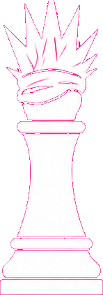
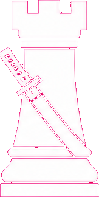
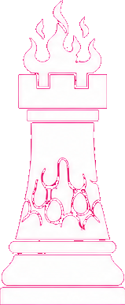
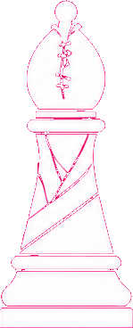
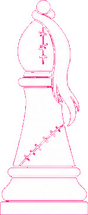
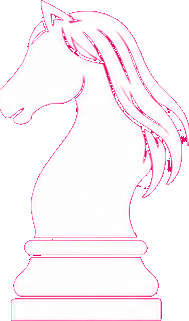
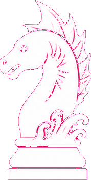

Энергия
Каждый свой ход игрок получает +2 энергии. За взятие фигуры - ещё +1. Максимум: 10.
FAQ / GitHub Pages
Полный справочник по фигурам, техникам, РТ и статус-эффектам. Эта страница статическая и может жить отдельно в
/docs.
Короткая выжимка того, как вообще устроена партия.
Каждый свой ход игрок получает +2 энергии. За взятие фигуры - ещё +1. Максимум: 10.
За ход можно сделать только одно действие: обычный ход, технику или РТ.
Сукуна не умирает от дальней техники или РТ напрямую. Вместо этого создаётся шах техникой.
РТ дорогие, одноразовые и после любой РТ действует глобальный откат на 3 своих хода.
Все персонажи и их фактическое поведение в текущей версии игры.
Король
Центр всей партии. Давит ближней угрозой и раскрывает РТ через захват опасной зоны вокруг себя.

Ферзь
Главный дальний контролёр. Его техника идёт по циклу и меняет темп поля от хода к ходу.

Ладья
Его сила зависит от окружения. Сам по себе он не имеет базовой техники и раскрывается через копирование.

Ладья
Контроль прямых линий и огненное давление через лаву.

Слон
Ломает пешечные построения, двигает чужой фронт и вскрывает линии.

Слон
Играет от искажения и вынуждает соперника тратить ходы на спасение фигур.

Конь
Резкие позиционные врывы, прыжки и давление массы вблизи.

Конь
Локальный контролёр зоны. Выталкивает цели и режет чужие техники вблизи.
Пешка
Лобовая пешка с прямым пробоем вперёд.
Пешка
Жертвенная пешка. Если активирует технику на двух последних рядах врага, на её месте появляется Махорага.

Особая Пешка
Призванная фигура Мэгуми. Сначала ходит как пешка, затем расширяет набор движений через колесо.
Пешка
Помечает цель и режет её технику. Хороша для подготовки размена.
Пешка
Дальняя диагональная казнь через точечную атаку.
Пешка
Линейный прокол на 1-2 клетки по чистой линии.
Пешка
Меняет позиции союзных пешек и ломает фронт противника.
Пешка
Простая и жёсткая пешка с бесплатным фронтальным добиванием.
Пешка
Контроль соседней клетки через отключение хода и техники.
Сводный каталог, если нужно быстро найти конкретный эффект.
Уничтожает соседнюю вражескую фигуру.
Притягивает цель на 1 клетку к Годзё по линии.
Дальний удар до 3 клеток.
Усиленный дальний удар до 4 клеток.
Дальний удар по прямой с созданием лавы.
Сдвигает вражескую пешку на свободную соседнюю клетку.
Если фигурой не сходят, она погибает.
Прыжок с добиванием соседней цели.
Отталкивает цель от Дагона на 2 клетки, а если нельзя - на 1.
Фронтальное взятие пешкой.
Самоуничтожение с призывом Махораги на последних рядах врага.
Расширяет набор ходов Махораги по этапам.
Пометка цели и запрет на технику.
Дальнее диагональное взятие.
Линейная атака вперёд до 2 клеток.
Обмен местами с союзной пешкой.
Бесплатное фронтальное взятие.
Лишает соседнюю цель движения и техники.
До двух целей получают рассечение в радиусе 2.
Парализует до трёх целей в радиусе 2.
Копирует текущую технику любой фигуры в радиусе 2.
Создаёт лаву на нескольких клетках и накладывает ожог.
Подавляет пешек в зоне и двигает одну из них.
Даёт искажение и молчание двум фигурам.
Притягивает врагов и вешает давление массы.
Локальная зона подавления техник и захвата энергии.
Все основные дебаффы и особые состояния на поле.
Если этой фигурой не сходить на следующем ходу владельца, она погибнет.
Если фигура останется в опасной зоне до следующего своего хода, она погибнет.
Если фигура не уйдёт с лавы до следующего своего хода, она погибнет.
Фигура не может использовать технику или РТ.
Фигура не может двигаться и использовать техники.
Фигура временно подавлена и не может действовать.
Фигура не может использовать технику или РТ на следующий ход.
При взятии этой фигуры атакующий получает дополнительную энергию.
Фигура не может двигаться и использовать технику 1 ход.
За взятие этой фигурой не начисляется энергия.